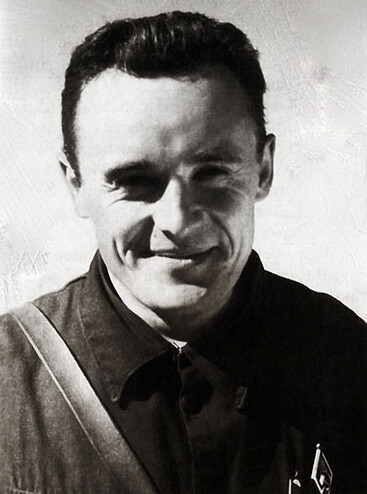
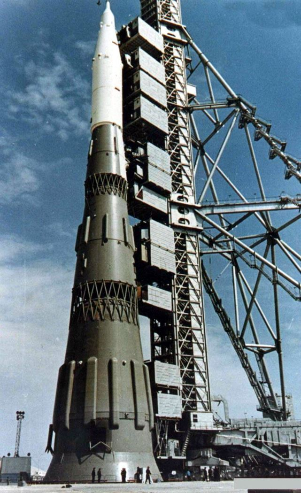
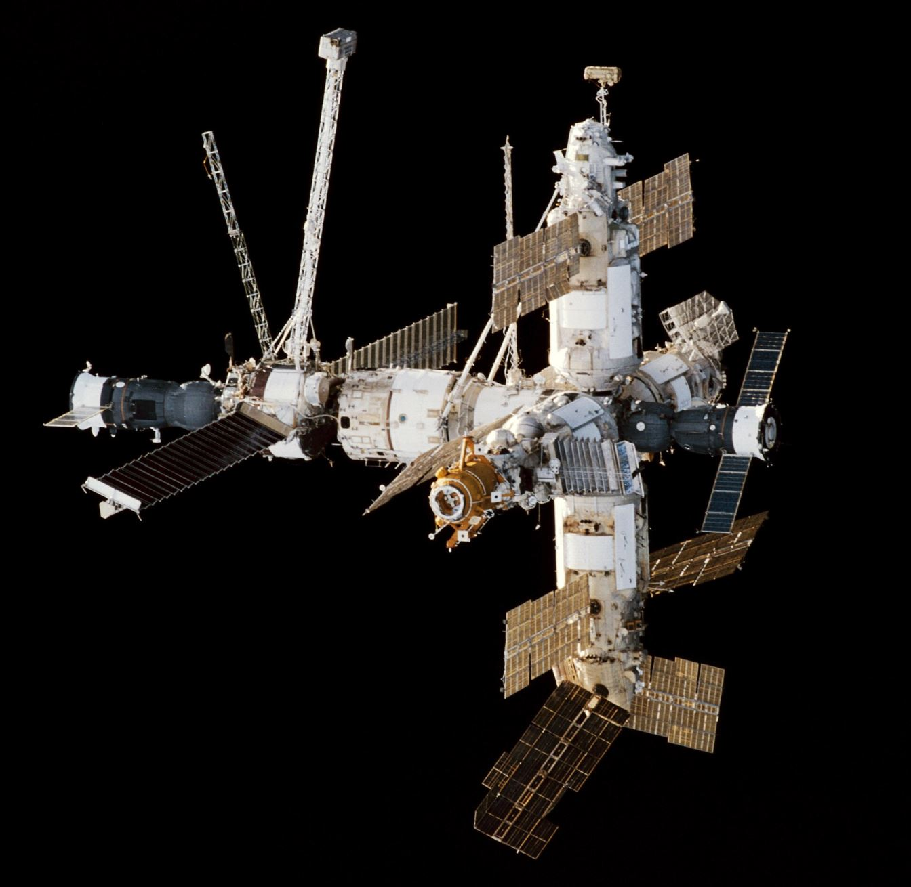

For a decade, the Soviet Union did everything first: first satellite, first animal in orbit, first human, first woman, first spacewalk. Then the finish line moved to the Moon — and the Soviet program, brilliant and secretive, could not follow.
The Chief Designer nobody was allowed to name
The Soviet space program had one undisputed genius: Sergei Korolev. The public never learned his name during his lifetime — he was known only as the "Chief Designer". His identity was a state secret, because the Soviet leadership was convinced the West would assassinate him. He died on 14 January 1966, during surgery, from cancer. Many historians believe that if Korolev had lived, the Soviet Moon program might have succeeded.

Their firsts
The Soviet list of firsts reads like the history of spaceflight itself:
An 83.8 kg polished sphere, beeping. The West was shocked; the beep was heard on radios worldwide.
A stray dog from Moscow became the first living creature to orbit Earth. No return was ever planned.
First spacecraft to escape Earth (Luna 1), first impact on the Moon (Luna 2, 13 September), first photos of the far side (Luna 3, 7 October).
One orbit, 108 minutes, and instant world fame. "Poyekhali!" — "Let's go!" — he said at liftoff.
25 hours 18 minutes, 17 orbits. Titov was also the first person to suffer space sickness — and the first to sleep in orbit.
48 orbits. It would be 19 years before another woman flew.
Three cosmonauts in a cabin built for one — with no spacesuits and no escape system. It looked great on television; the engineers were terrified.
12 minutes outside — and a near-fatal struggle to re-enter: his suit had inflated stiff in the vacuum. Leonov had to bleed air from it, against the rules, to squeeze back through the hatch.
The first photographs ever taken from the lunar surface are Soviet.
The path the USSR chose instead of the Moon: staying in orbit, for months at a time.
The spacecraft
Vostok was a simple, robust ball-shaped capsule that ejected the cosmonaut by parachute before landing — because the capsule itself hit the ground too hard to survive. Voskhod was Vostok modified to fit more people, by removing every safety system, for propaganda victories. Both were dead ends.
Soyuz was the future. Its first crewed flight ended in tragedy — Vladimir Komarov died on 24 April 1967 when the parachute failed on Soyuz 1, the first in-flight spaceflight fatality — but the design survived. Modernised again and again, Soyuz is still flying today: the longest-serving crewed spacecraft in history, and for years the only way to reach the ISS.
The N-1: the Moon rocket that never worked
The Soviet answer to the Saturn V was the N-1: a giant rocket with a first stage powered by 30 engines — so many that they could never be test-fired together on the ground. It launched four times. It failed four times.
| Attempt | Date | Result |
|---|---|---|
| 1 | 21 February 1969 | Engine shutdowns in flight; rocket destroyed at ~68 seconds |
| 2 | 3 July 1969 | Exploded on the pad seconds after liftoff — one of the largest non-nuclear explosions in history |
| 3 | 27 June 1971 | Lost control and broke apart |
| 4 | 23 November 1972 | First-stage failure; last N-1 flight |

The robots went instead
Where the crewed program stalled, the robots flew beautifully. Luna 9 made the first soft landing (1966); Luna 10 became the first lunar orbiter (1966); Luna 16 brought Moon soil home automatically (September 1970); and Lunokhod 1 — on 17 November 1970 — became the first rover to drive on another world. In 1968, Zond 5 even flew around the Moon and back with turtles on board, as a dress rehearsal for a crewed flight that never came.
Why no cosmonaut ever walked on the Moon
Korolev died in 1966, at the worst possible moment. The N-1 failed four times, in part because its 30 engines were never test-fired together. The Soviet leadership only ordered a crewed Moon landing on 3 August 1964 — more than three years after Kennedy committed America to the same goal. The design bureaus competed instead of cooperating. And the funding never matched NASA's: the often-quoted "one-tenth of Apollo's cost" is an estimate, not an official figure. The program was suspended in 1974 and quietly cancelled in 1976.
Why they flew first — and why it cost them
The Soviet program was brilliant at firsts because it accepted risks no Western agency would have accepted. Voskhod 1 flew three men without spacesuits and without an escape system because the propaganda value of "first crew of three" outweighed everything else. Vostok's cosmonauts ejected from the capsule and parachuted down separately because the capsule itself hit the ground too hard to survive. The same ruthlessness produced the first satellite and the first human — and later, the first in-flight deaths, which the state then denied or disguised for years. Secrecy was the program's true fuel: it let the Soviets claim glory for successes and bury failures that, in the end, buried their Moon program.
The Soviet program in numbers
After the race: stations and a shuttle
Having lost the Moon, the USSR won the next race — to live in orbit. The Salyut stations led to Mir (1986–2001), the first modular space station: of its fifteen years in orbit, it was crewed for about twelve and a half, including one continuous occupation of almost a decade. The cost was real: the crew of Soyuz 11 died returning from Salyut 1 on 30 June 1971, when a valve opened and the capsule depressurised.

And once, briefly, the USSR even had its own shuttle: Buran, which flew a single unmanned mission on 15 November 1988 — two orbits, then a fully automatic landing. The program died with the country that built it.
Now that you know both sides, go back to the scoreboard: who won the space race?